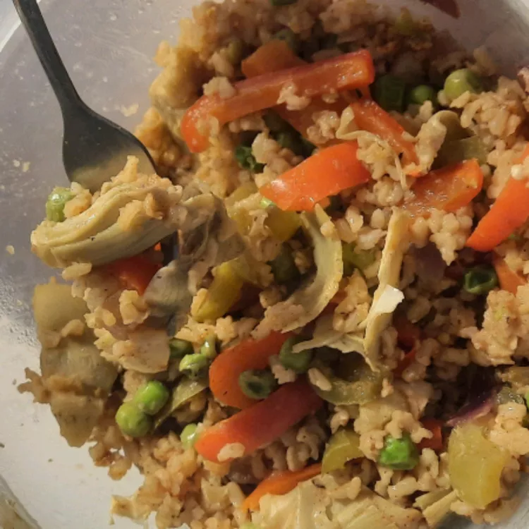

Vegan Paella

Description
This is a twist on a Spanish-favorite. Use seitan, tofu, or tempeh to add a protein element. I substituted turmeric for the traditional saffron to cut costs.
Ingredients
- 2 cups boiling water
- 1 cup white rice
- 1 tablespoon olive oil
- 1 onion, chopped
- 3 cloves garlic, minced
- 1 green bell pepper, sliced
- 1 red bell pepper, sliced
- 1 tomato, diced
- 2 cups vegetable broth
- 1 tablespoon paprika
- 1 teaspoon salt
- 1 teaspoon ground turmeric
- 1 cup peas
- 1 cup drained and quaretred canned antichoke hearts
Steps
- Mix boiling water and rice together in a bowl; let stand for 20 minutes. Drain.
- Heat olive oil in a large skillet over medium heat; cook and stir onion and garlic until onion is transparent, about 5 minutes. Add green bell pepper, red bell pepper, and tomato; cook and stir until peppers are slightly tender, about 3 minutes.
- Mix rice and vegetable broth into onion-pepper mixture; bring to a boil. Reduce heat to low and simmer. Add paprika, salt, and turmeric; cover skillet and simmer until rice is tender, about 20 minutes. Stir peas and artichoke hearts into rice mixture and cook until heated through, about 1 minute more.
Home